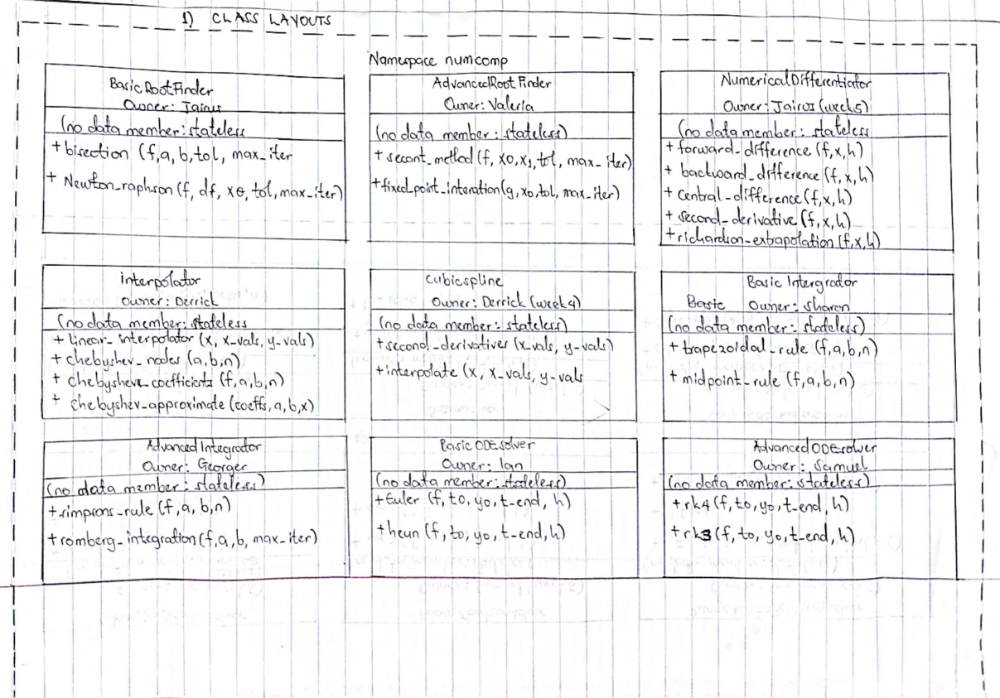
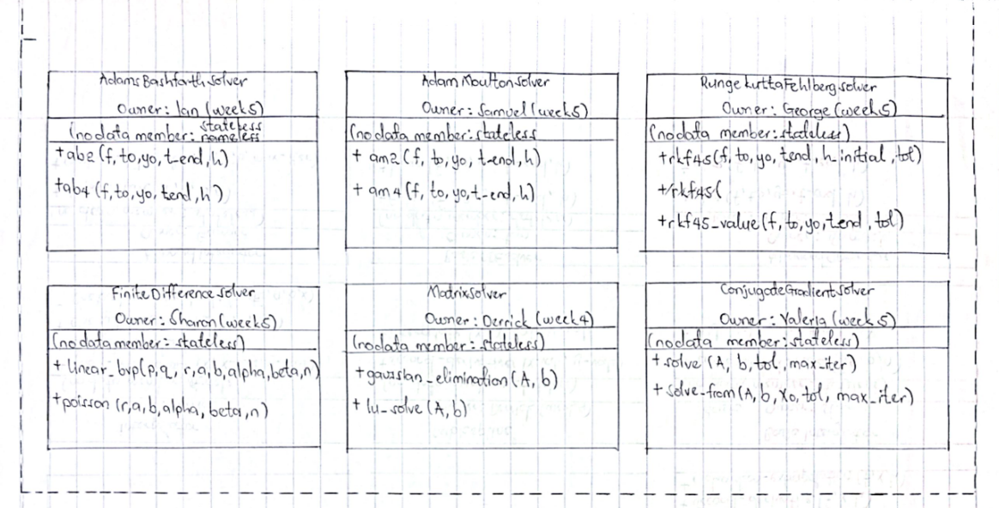
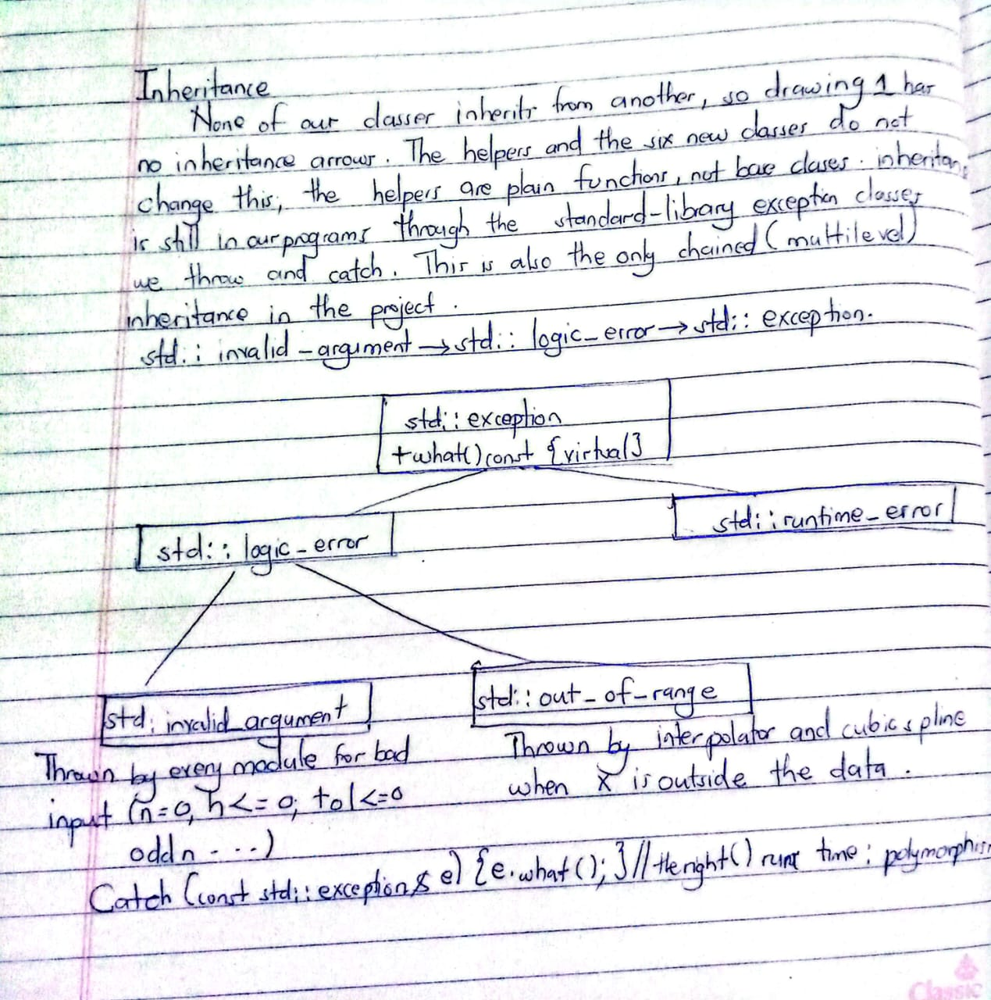

- Generated by
 1.18.0
1.18.0
|
Group 23 Numerical Computing 2 1.0
A C++17 library for root finding, interpolation, integration, ODEs and linear systems
|


| Class | Owner | Data members | Member functions (all public) |
|---|---|---|---|
| BasicRootFinder | Jairus | none | double bisection(std::function<double(double)> f, double a, double b, double tol, int max_iter) double newton_raphson(std::function<double(double)> f, std::function<double(double)> df, double x0, double tol, int max_iter) |
| AdvancedRootFinder | Valeria | none | double secant_method(f, double x0, double x1, double tol, int max_iter) double fixed_point_iteration(g, double x0, double tol, int max_iter) |
| NumericalDifferentiator | Jairus | none | double forward_difference(f, double x, double h) double backward_difference(f, double x, double h) double central_difference(f, double x, double h) double second_derivative(f, double x, double h) double richardson_extrapolation(f, double x, double h) |
| Interpolator | Derrick | none | double linear_interpolate(double x, const std::vector<double>& x_vals, const std::vector<double>& y_vals) std::vector<double> chebyshev_nodes(double a, double b, int n) std::vector<double> chebyshev_coefficients(f, double a, double b, int n) double chebyshev_approximate(const std::vector<double>& coeffs, double a, double b, double x) |
| CubicSpline | Derrick | none | std::vector<double> second_derivatives(const std::vector<double>& x_vals, const std::vector<double>& y_vals) double interpolate(double x, const std::vector<double>& x_vals, const std::vector<double>& y_vals) |
| BasicIntegrator | Sharon | none | double trapezoidal_rule(f, double a, double b, int n) double midpoint_rule(f, double a, double b, int n) |
| AdvancedIntegrator | George | none | double simpsons_rule(f, double a, double b, int n) double romberg_integration(f, double a, double b, int max_iter) |
| MatrixSolver | Derrick | none | std::vector<double> gaussian_elimination(const std::vector<std::vector<double>>& A, const std::vector<double>& b) std::vector<double> lu_solve(same parameters) |
| BasicODESolver | Ian | none | std::vector<std::pair<double,double>> euler(std::function<double(double,double)> f, double t0, double y0, double t_end, double h) ... heun(same parameters) |
| AdvancedODESolver | Samuel | none | std::vector<std::pair<double,double>> rk4(f, double t0, double y0, double t_end, double h) ... rk3(same parameters) |
| AdamsBashforthSolver | Ian | none | std::vector<std::pair<double,double>> ab2(f, double t0, double y0, double t_end, double h) ... ab4(same parameters) |
| AdamsMoultonSolver | Samuel | none | std::vector<std::pair<double,double>> am2(f, double t0, double y0, double t_end, double h) ... am4(same parameters) |
| RungeKuttaFehlbergSolver | George | none | std::vector<std::pair<double,double>> rkf45(f, double t0, double y0, double t_end, double h_initial, double tol) double rkf45_value(f, double t0, double y0, double t_end, double tol) |
| FiniteDifferenceSolver | Sharon | none | std::vector<std::pair<double,double>> linear_bvp(p, q, r, double a, double b, double alpha, double beta, int n) ... poisson(r, double a, double b, double alpha, double beta, int n) |
| ConjugateGradientSolver | Valeria | none | std::vector<double> solve(const std::vector<std::vector<double>>& A, const std::vector<double>& b, double tol, int max_iter) std::vector<double> solve_from(A, b, const std::vector<double>& x0, double tol, int max_iter) |

| Template | File | Parameter | What it does |
|---|---|---|---|
| run_safely<Code> | src/app/module_menus.cpp | Code = any callable | Runs any lambda inside one try/catch, so 18 menu calls share one error handler |
| names<Entry> | src/app/catalog.hpp | Entry = any struct with a name | Builds menu labels for all eight problem tables |
| demo::section<Code> | examples/example_helpers.hpp | Code = any callable | Runs the body of one demo section |
| demo::show_rejected<Code> | examples/example_helpers.hpp | Code = any callable | Runs a call that should throw and prints the error |
| test::expect_throw<Expected, Code> | tests/test_helpers.hpp | Expected = exception type, Code = callable | One function checks every exception type |
| test::expect_no_throw<Code> | tests/test_helpers.hpp | Code = any callable | Checks that a call does not throw |
| max_linear_error<F> | examples/example_interpolator_applied.cpp | F = any callable | A local helper that measures an interpolation error for any function |